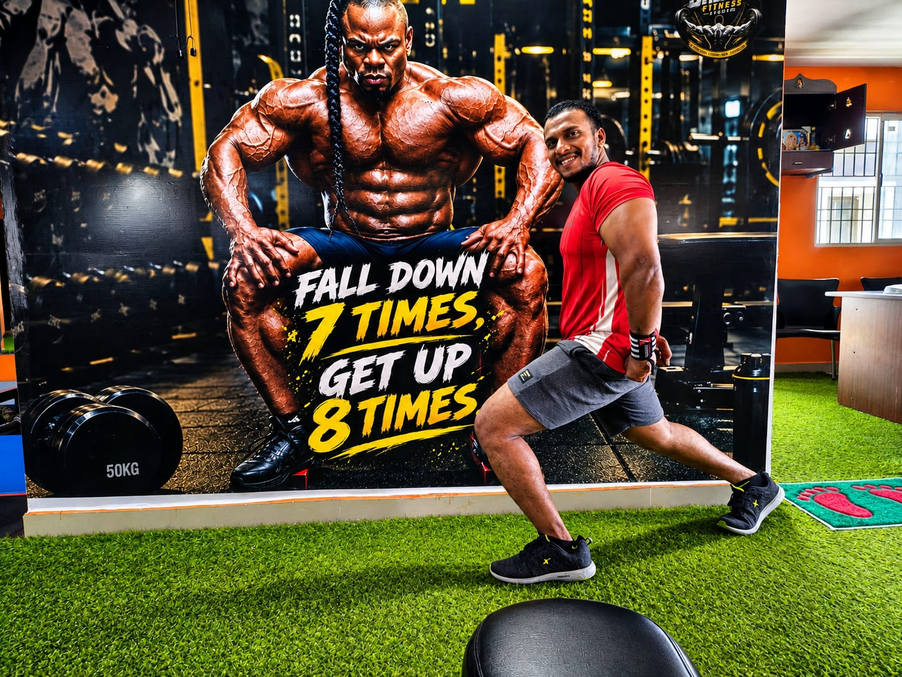

Tell us your goal.
Book a studio appointment or an online consultation. Tell us what you want to work towards.
A stronger body. A clearer mind.
A little more you, every day.
YOUR GOALS. YOUR PACE.
YOUR NEXT CHAPTER.

DISCIPLINE BUILDS RESULTS01 / THE STUDIO
A PLACE TO SHOW UP FOR YOURSELF.Looking for a gym in Porur, Chennai? Shree Fitness Unisex Studio AC is a unisex, air-conditioned gym on Sakthi Nagar 4th Street. Find free weights, resistance machines, cardio equipment and space to move.
Explore strength training, cardio and fitness coaching at a local Porur gym, open from 5:30 AM Monday to Saturday and on Sunday mornings. Ask the team about membership, personal training with Sakthi Master, and online training options.
Come see it for yourselfINSIDE SHREE / THE GALLERY
EXPLORE THE SPACE. FIND YOUR FOCUS.02 / FIND YOUR FOCUS
EVERY STARTING POINT COUNTS.Start with what matters to you.
Let’s talk about how to get there.
Build your routine around free weights, resistance work and steady progression.
WEIGHT TRAINING · BODYBUILDINGMake movement a habit with cardio and training that fits your fitness goals.
CARDIO · WEIGHT MANAGEMENTSpeak with Sakthi Master about personal training and the right starting point for you.
INDIVIDUAL FOCUS · COACHINGEVERY JOURNEY IS PERSONAL
Training journeys shared by Shree Fitness. Progress takes consistency, and every person’s starting point is different.
Bring your own goal. Let’s talk about how you want to work towards it.
Discuss your goals03 / PERSONAL TRAINING
SAKTHI MASTER Personal training
The first step is a conversation. Share what you want to work towards, ask your questions, and explore personal training at Shree Fitness.
Whether you’re finding your feet or returning to your routine, start with a plan you can discuss with your trainer.
04 / ONLINE TRAINING
SAME COMMITMENT. YOUR OWN SPACE.Make room for fitness, wherever your day takes you. Train online with Sakthi Master, with guidance and support that keeps your goals in focus.
Join your workout from a mobile, tablet or laptop.
Discuss everyday food habits that support your training.
Stay connected with your trainer as you build your routine.
Review how you are progressing and discuss your next steps.
Session timings, equipment needs and fees are agreed with the trainer. How online training works ↗
No gym?
Make your space count.
LIVE SESSIONS · PERSONAL SUPPORT · WEEKLY PROGRESS
MAKE YOUR FIRST MOVE
ONE STEP AT A TIME.Book a studio appointment or an online consultation. Tell us what you want to work towards.
Find us opposite Saravana Stores in Porur. See the space and speak to the team.
Discuss a training option that fits your goals, experience and schedule.
YOUR NEXT CHAPTER
Let’s make the first step simple.
Tell us what you’re looking for.
05 / FIND YOUR WAY HERE
YOUR NEIGHBOURHOOD. YOUR STUDIO.Upstairs at the BSNL Telephone Exchange
Opposite Saravana Stores
A neighbourhood gym for people who live or work around Porur, including Ramapuram, Valasaravakkam, Mugalivakkam, Iyyappanthangal, Madhanandapuram, Gerugambakkam and Kovur. Use “Get directions” to check your route.
Get directionsMonday – Saturday5:30 AM – 9:30 PM
Sunday7:00 AM – 11:00 AM
Hours shown on studio materials. Call ahead for holiday timings.If the map does not load, use the directions link.
A FEW THINGS YOU MIGHT BE WONDERING
Monday to Saturday, 5:30 AM to 9:30 PM. Sunday, 7:00 AM to 11:00 AM. Call ahead for holiday timings.
No.3, Sakthi Nagar 4th Street, Somasundaram Avenue, Porur, Chennai 600116. The studio is upstairs at the BSNL Telephone Exchange, opposite Saravana Stores.
Yes. Shree Fitness is a unisex, air-conditioned fitness studio in Porur, Chennai, so both men and women can train here.
Dumbbells and kettlebells, a power rack, bench press stations, adjustable benches, a cable crossover, lat pulldown, leg press and other resistance machines, plus treadmills, spin bikes, an elliptical cross-trainer and a turf area.
Book a studio visit, see the space and tell the team your goal. You can also discuss personal training with Sakthi Master if you would like guidance from the start.
Call 95660 99329 or 8778642342, or use the enquiry form above. The team can share current membership options and fees.
Yes. Contact Sakthi Master on 8778642342 to discuss your goals, availability and personal training fees.
Yes. Online training includes live workout sessions, diet-plan guidance, personal support and weekly progress tracking. Request an online consultation to agree timings, equipment and fees with the trainer.
No. The appointment form sends your request to the studio on WhatsApp. The team will contact you to confirm your date and time. No payment is taken on this website.